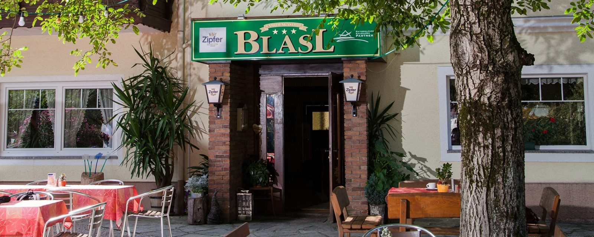

Gaststube
60 Sitzplätze
Frisch gekochte Köstlichkeiten aus der Region, vegetarische Auswahl und hausgebackene Mehlspeisen – in der Gaststube, im Biergarten unter alten Nussbäumen oder in einem der beiden Extrastüberl.

Neben der Gaststube mit 60 Sitzplätzen und dem herrlichen Gastgarten gibt es zwei Extrastüberl für 25 und 45 Personen. Ideal für Familienfeiern, Sitzungen und Versammlungen oder kleinere Firmenseminare – Beamer, Leinwand und Flipchart sind vorhanden.
Im Biergarten unter alten Nussbäumen sitzen Sie mit Blick auf die Burgruine Losenstein. Dazu kommen eine Sonnenterrasse und der große Garten mit Pool. Im Lokal steht ein Billardtisch.
60 Sitzplätze
25 Personen
45 Personen
Öffnungszeiten des Hauses 2026: Mi – Sa 16:00 – 24:00 Uhr, Sonntag 10:00 – 17:00 Uhr.
Betriebsurlaub: 31.08. bis einschließlich 17.09.2026.
Was auf den Tisch kommt, ist frisch gekocht und stammt so weit wie möglich aus der Region. Neben den Klassikern gibt es eine vegetarische Auswahl, und die Mehlspeisen backen wir im Haus.
Die aktuelle Speisekarte liegt im Haus auf und wechselt mit der Saison. In der neuen Website wäre sie als gepflegte Online-Karte samt Tagesempfehlung hinterlegt – diese Vorschau führt bewusst keine Gerichte und Preise an, weil sie auf der bestehenden Seite nicht veröffentlicht sind.
Für Zeiten, in denen das Restaurant nicht geöffnet ist, finden Sie in der Lounge Kaffee, Getränke und Snacks und einen komfortablen Platz, wo Sie sich mit Ihren Mitreisenden treffen können.
An Ruhetagen bieten wir für Hausgäste auch Abendessen nach Vereinbarung an.
Ob Tisch für zwei im Biergarten, Familienfeier im Extrastüberl oder Firmenseminar mit Beamer: Sagen Sie uns Termin, Personenzahl und Anlass – wir melden uns mit einer Bestätigung.